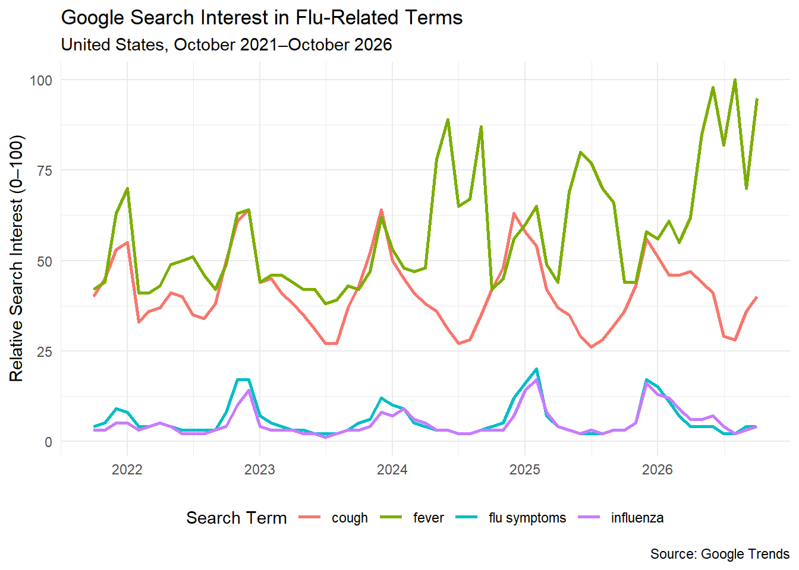
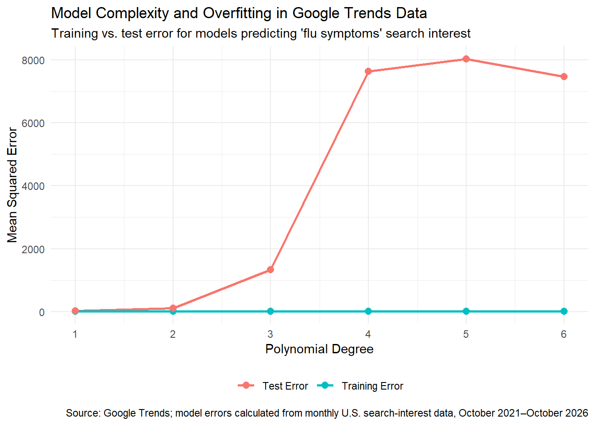

Prepare for Class 5: When Is More Data Not Better?
Big Data Analytics Pitfalls: Google Flu Trends
library(tidyverse)
Warning: package 'tidyverse' was built under R version 4.5.3
Warning: package 'ggplot2' was built under R version 4.5.3
Warning: package 'tidyr' was built under R version 4.5.3
Warning: package 'readr' was built under R version 4.5.3
Warning: package 'purrr' was built under R version 4.5.3
Warning: package 'dplyr' was built under R version 4.5.3
Warning: package 'stringr' was built under R version 4.5.3
Warning: package 'lubridate' was built under R version 4.5.3
── Attaching core tidyverse packages ──────────────────────── tidyverse 2.0.0 ──
✔ dplyr 1.2.1 ✔ readr 2.2.0
✔ forcats 1.0.0 ✔ stringr 1.6.0
✔ ggplot2 4.0.3 ✔ tibble 3.3.0
✔ lubridate 1.9.5 ✔ tidyr 1.3.2
✔ purrr 1.2.2
── Conflicts ────────────────────────────────────────── tidyverse_conflicts() ──
✖ dplyr::filter() masks stats::filter()
✖ dplyr::lag() masks stats::lag()
ℹ Use the conflicted package (<http://conflicted.r-lib.org/>) to force all conflicts to become errors
# Read Google Trends datatrends <-read_csv("data/time_series_US_20211007-1644_20261007-1644.csv")
Rows: 61 Columns: 5
── Column specification ────────────────────────────────────────────────────────
Delimiter: ","
dbl (4): flu symptoms, fever, cough, influenza
date (1): Time
ℹ Use `spec()` to retrieve the full column specification for this data.
ℹ Specify the column types or set `show_col_types = FALSE` to quiet this message.
# Convert date columntrends <- trends |>mutate(Time =as.Date(Time))# Convert from wide to long formattrends_long <- trends |>pivot_longer(cols =-Time,names_to ="Search Term",values_to ="Search Interest" )# Create visualizationggplot( trends_long,aes(x = Time,y =`Search Interest`,color =`Search Term` )) +geom_line(linewidth =1) +labs(title ="Google Search Interest in Flu-Related Terms",subtitle ="United States, October 2021–October 2026",x =NULL,y ="Relative Search Interest (0–100)",color ="Search Term",caption ="Source: Google Trends" ) +theme_minimal() +theme(legend.position ="bottom" )

The Google Trends data show clear seasonal patterns in flu-related searches. Search interest for flu symptoms and influenza tends to increase at similar times, especially around fall and winter, while fever and cough have much higher overall search interest and sometimes spike differently. This demonstrate why search data can be useful as an early signal, but it’s not the same as measuring actual flu cases. People may search these terms because of seasonal illness, media coverage, concern for someone else, or symptoms caused by something other than influenza. Google can collect far more search data than the CDC, but that doesn’t mean that more data is better data.
Overfitting and Overparameterization
Overfitting is where a model is too complex (Investopedia 2026), while overplotting is a data visualization issue where too much data obscures the chart (Bock n.d.).
Google Flu Trends faced both problems. Google could examine millions of possible search terms and compare them with a much smaller number of CDC flu observations. With so many possible predictors, some search terms could appear strongly related to flu activity simply by chance. A model built around those relationships might fit historical CDC data extremely well but fail when search behavior or flu patterns changed. This is why a model should be evaluated on data that were not used to build it rather than judged only by how closely it fits past observations.
library(tidyverse)# Read the real Google Trends datatrends <-read_csv("data/time_series_US_20211007-1644_20261007-1644.csv")
Rows: 61 Columns: 5
── Column specification ────────────────────────────────────────────────────────
Delimiter: ","
dbl (4): flu symptoms, fever, cough, influenza
date (1): Time
ℹ Use `spec()` to retrieve the full column specification for this data.
ℹ Specify the column types or set `show_col_types = FALSE` to quiet this message.
# Prepare the datatrends <- trends |>mutate(Time =as.Date(Time),Month =row_number() )# Use the first 70% for training# and the last 30% for testingsplit_point <-floor(nrow(trends) *0.70)train <- trends[1:split_point, ]test <- trends[(split_point +1):nrow(trends), ]# Test polynomial models of increasing complexitydegrees <-1:6errors <-map_dfr(degrees, function(d) { model <-lm(`flu symptoms`~poly(Month, degree = d, raw =TRUE),data = train ) train_pred <-predict(model, newdata = train) test_pred <-predict(model, newdata = test)tibble(Degree = d,`Training Error`=mean((train$`flu symptoms`- train_pred)^2),`Test Error`=mean((test$`flu symptoms`- test_pred)^2) )})# Convert to long format for plottingerrors_long <- errors |>pivot_longer(cols =c(`Training Error`, `Test Error`),names_to ="Error Type",values_to ="Mean Squared Error" )# Create chartggplot( errors_long,aes(x = Degree,y =`Mean Squared Error`,color =`Error Type` )) +geom_line(linewidth =1) +geom_point(size =2.5) +scale_x_continuous(breaks = degrees) +labs(title ="Model Complexity and Overfitting in Google Trends Data",subtitle ="Training vs. test error for models predicting 'flu symptoms' search interest",x ="Polynomial Degree",y ="Mean Squared Error",color =NULL,caption ="Source: Google Trends; model errors calculated from monthly U.S. search-interest data, October 2021–October 2026" ) +theme_minimal() +theme(legend.position ="bottom" )

This chart uses real Google Trends data for flu symptoms. As the model becomes more complex, it fits the training data better, but its performance on new data may get worse, which is overfitting. Google Flu Trends took the same risk because it tested millions of search terms against a much smaller number of CDC flu observations.
Wickham Talk Summary
Wickham introduces several ideas and tools for working with data, such as the grammar of graphics, tidy data, data reshaping, ggplot2, faceting, functions, iteration, animation, and reproducible reports. His main point is that data analysis becomes simpler when data are organized in a consistent structure and when the tools follow a common design idea. Additionally, he separates exploratory visualization, which helps analysts find patterns, from polished visualization, which is designed to communicate and visualize results clearly to others.
References
Bock, Tim. n.d. “What is Overplotting? The Comprehensive Guide.” <a href=“https://www.displayr.com/what-is-overplotting/” “What is Overplotting? The Comprehensive Guide”>Displayr Blog (accessed October 7, 2026).
Google. (2026). Google Trends. Search interest for “flu symptoms,” “fever,” “cough,” and “influenza,” United States, October 2021–October 2026.
Investopedia. 2026. “Understanding Overfitting: Causes, Impacts, and Prevention.” <a href=“https://www.investopedia.com/terms/o/overfitting.asp” “Understanding Overfitting: Causes, Impacts, and Prevention”>Investopedia Financial Terms Dictionary (accessed October 7, 2026).
AI Disclosure
I used ChatGPT (OpenAI, GPT-5.6 Sol) to help organize the note, explain concepts, revise wording, and generate/refine the R code for the visualizations. My prompts focused on Google Flu Trends, overfitting, overparameterization, and interpreting the downloaded Google Trends data. I reviewed and edited the final work myself.